Biograft
Implantes Biológicos
Chips Biograft®
Implante derivado de tejido óseo humano procesado, osteoconductor, estéril y apirogénico. Disponible en variantes trabeculares y esponjosas.
Distribuimos productos de las marcas líderes en ortopedia y cirugía: implantes biológicos, ortesis posoperatorias y paquetes quirúrgicos estériles. Todo respaldado con asistencia técnica especializada.
Implante derivado de tejido óseo humano procesado, osteoconductor, estéril y apirogénico. Disponible en variantes trabeculares y esponjosas.

Implante de tejido tendinoso humano para reconstrucción de ligamentos. Estéril, apirogénico y esterilizado por radiación gamma.

Matriz Ósea Desmineralizada Nano lista para usar. Injerto óseo procesado en múltiples presentaciones para aplicación clínica inmediata.

Inmovilizador posoperatorio para hombro con 15° de abducción. Para reparación de manguito rotador, Bankart y esguinces.

Inmoviliza el hombro después de procedimientos quirúrgicos o luxación. Ajustable, cómodo y fácil de usar en ambos lados.

Inmoviliza y da soporte a la rodilla en tratamientos pre y posoperatorios. Paneles laterales ajustables con varillas de estabilidad.

Rodillera articulada con rango de movimiento controlado para cirugías de LCA, LCP, LMC y LCL. Barras telescópicas y ajuste con velcro.
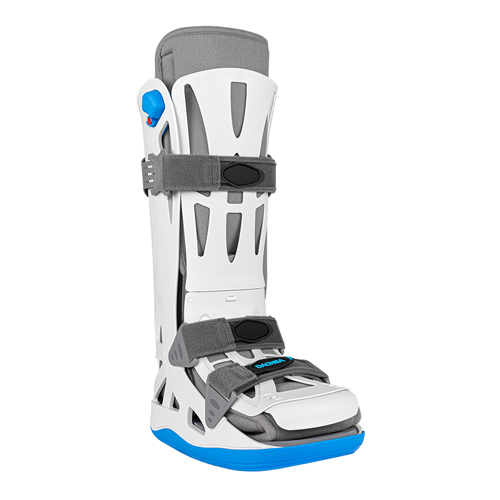
Bota ortopédica con doble cámara de aire para fracturas estables, esguinces e inestabilidades crónicas. Suela antideslizante con diseño curvo mejorado.
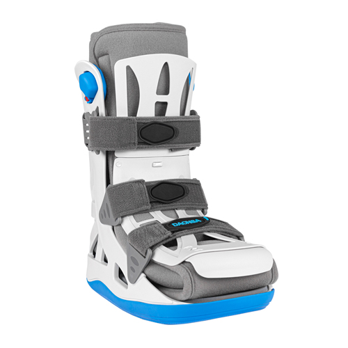
Bota ortopédica baja con doble cámara de aire para fracturas estables, esguinces e inestabilidades crónicas. Suela antideslizante mejorada.
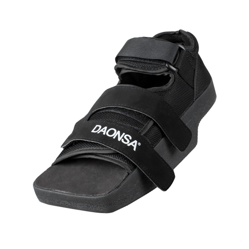
Calzado protector posoperatorio para fascitis plantar, úlceras y traumatismos de talón. Reduce la presión en el talón con correa de tobillo para mayor estabilidad.
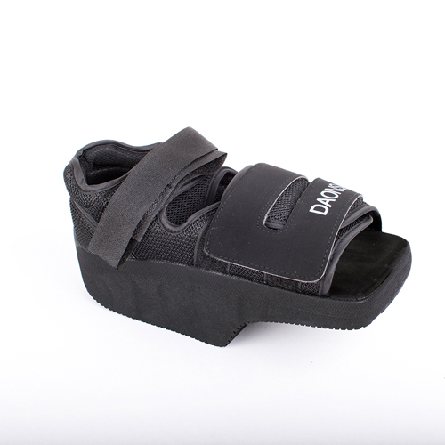
Calzado ortopédico que quita presión en metatarsianos y dedos. Indicado para úlceras diabéticas, cirugía de hallux valgus y otras osteotomías.
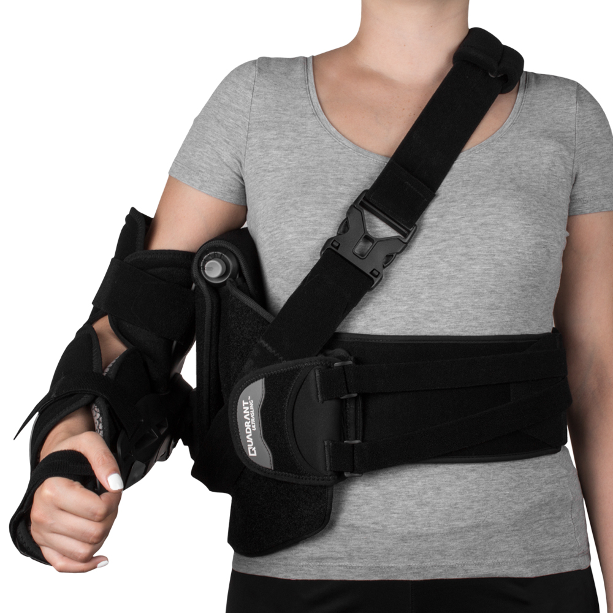
UltraSling™ Quadrant: ortesis de hombro con cuatro ángulos de inmovilización en un solo soporte. Universal para uso posoperatorio o postraumático.
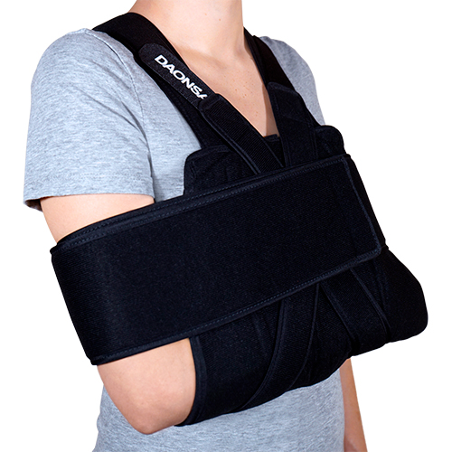
Inmoviliza el hombro después de procedimientos quirúrgicos o luxación. Ajustable a diferentes tamaños, uso bilateral y material suave y cómodo.
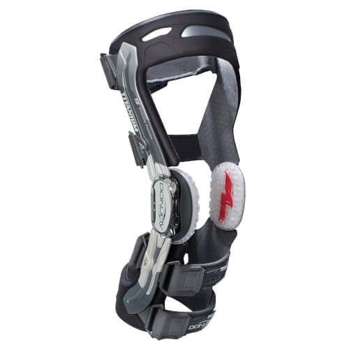
Rodillera de titanio de estructura ligera y gran resistencia. Fabricada a la medida del paciente para recuperación post-lesión en estilos de vida activos sin deportes de impacto.
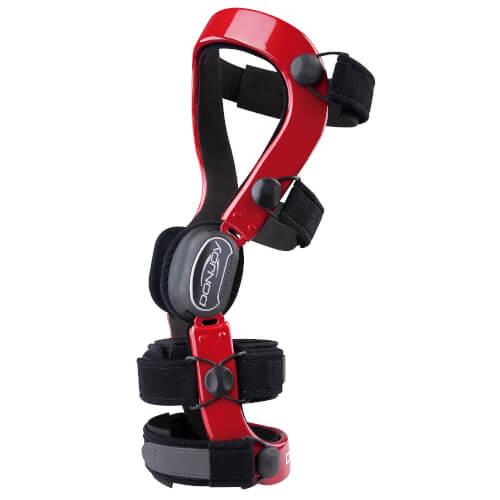
Rodillera ultra-ligera a la medida para inestabilidades moderadas y graves de LCA, LCP, LLI y LLE. Diseño que libera la zona interna del muslo para mayor confort en actividades de alto impacto.
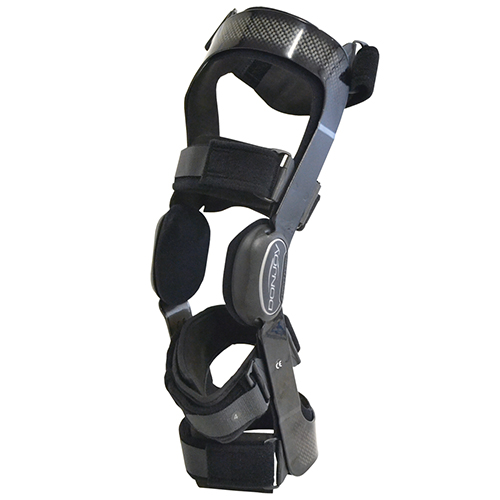
Sistema de palanca de 4 puntos para estabilidad del LCA. Bisagra de punto de fuerza que reduce la extensión articular y la tensión en el ligamento cruzado anterior.

Tela negra transpirable con acolchado de poliuretano para estabilización de muñeca. Incorpora varilla metálica y dos plásticas.
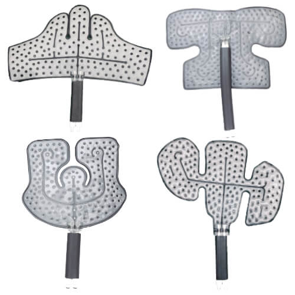
Almohadillas de compresión fría que se ajustan cómodamente a la articulación. Disponibles para rodilla, hombro y tobillo.

Controla el rango de movimiento de flexión y extensión. Para reconstrucción de codo, tendones y fracturas. Pre y posoperatorio.

Crioterapia controlada portátil para aliviar dolor y edema posoperatorio. Bomba sumergible con termómetro integrado para control de temperatura.
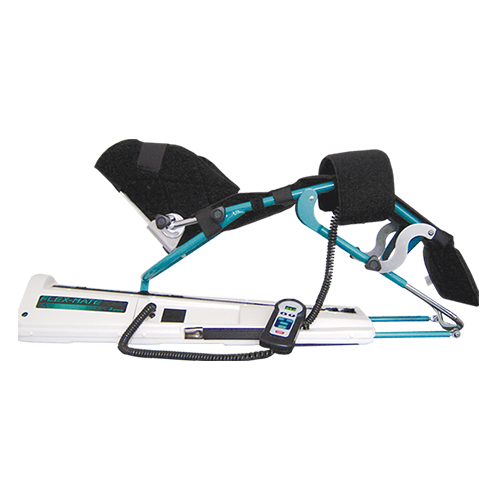
CPM liviana y portátil para hospital o hogar. Programable en flexión, extensión, velocidad y pausas. Control alámbrico con función de bloqueo.
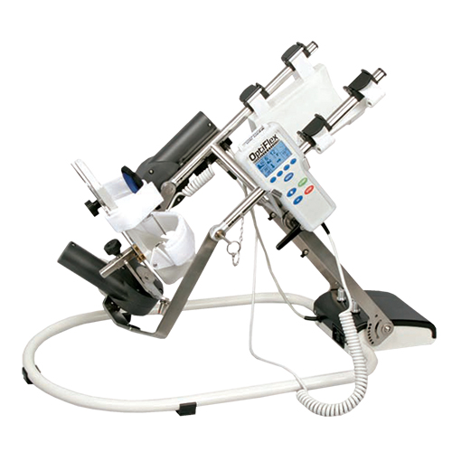
CPM con rango completo de flexión dorsal/plantar e inversión/eversión. Velocidad ajustable del 5% al 100%. Portátil y de fácil manejo.
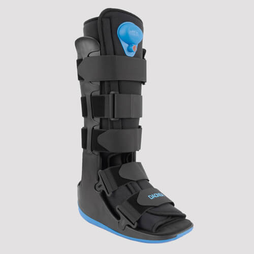
Bota ortopédica con sistema de doble celda de aire ajustable. Indicada para fracturas estables, esguinces agudos y moderados.
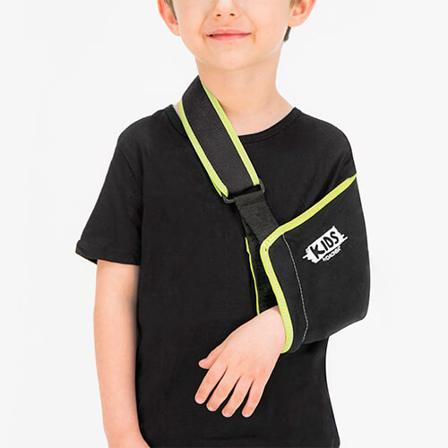
Inmoviliza y sujeta el brazo en casos de dislocaciones o fracturas. Con acolchado protector para mayor comodidad en hombros y cuello. Uso bilateral.
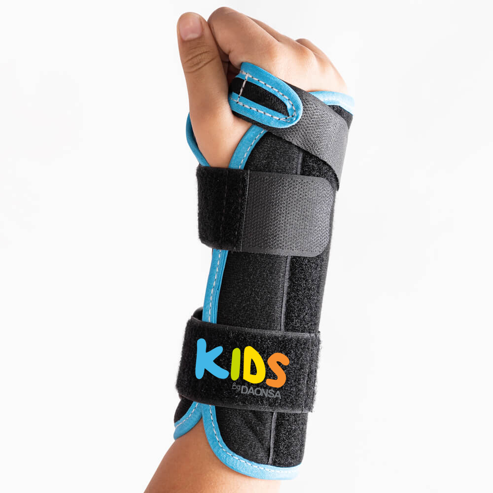
Sustituto del enyesado para lesiones articulares y contusiones. Con varillas metálicas dorsal y palmar, y cierres de velcro ajustables. Disponible en lado izquierdo y derecho.

Guantes estériles de poliisopreno sintético Isolex® con aloe vera liofilizado. Sin látex, sin polvo. Inspeccionados al 100%.

Paquete quirúrgico estéril completo para procedimientos generales. Batas, cubiertas de mesa, campos adhesivos y bolsa de suturas.

Paquete estéril para cirugías menores con batas quirúrgicas, campos, gasas, hojas de bisturí y lápiz de electrocirugía.

Solución completa para procedimientos complejos: batas reforzadas, campos absorbentes, compresas, bisturís y control de agujas.

Paquete integral para artroscopía de rodilla con campos especializados, tubo de succión, gasas, batas y estoquinete impermeable.

Paquete especializado para artroscopía de hombro con campo para división cuerpo-hombro, campo con bolsa colectora y agujas espinales.

Versión deluxe para artroscopía con dos batas Sirus, campos en "U" con adhesivo y campo con bolsa colectora de fluidos 229×315 cm.

Paquete especializado para cirugía de hombro con campo de 100"×66" con incisión y bolsa colectora, y campo para el cuerpo de 77"×114".

Todo lo necesario para cesárea: campo con bolsa y perforación, gasas, batas, manta para bebé, gorro y contenedor-contador de agujas.

Paquete completo para cesárea con kit adicional para atención inmediata del recién nacido: manta calefactora, gorro neonatal y almohadilla absorbente.

Paquete estéril completo para parto vaginal y alumbramiento: campo bajo-glúteo, campos para piernas, compresas, tijeras de cordón y pinza umbilical.
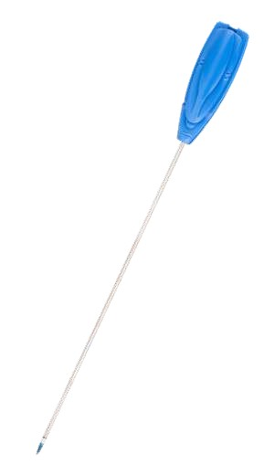
Ancla de titanio autoperforante para reparaciones de SLAP y Bankart. Diámetros 2.8mm y 3.5mm, pre-cargada con sutura USP #2.
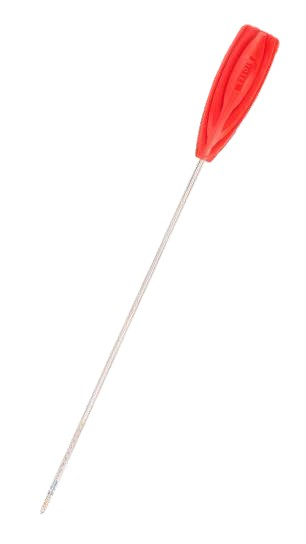
Ancla de PEEK no absorbible para SLAP y Bankart. Disponible en 2.8mm (1 sutura), 3.0mm y 3.5mm (2 suturas). Resistencia hasta 368.8N.
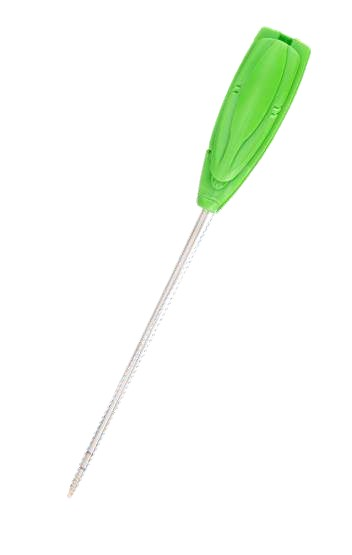
Ancla PEEK sin nudo en 2.8mm y 3.5mm. Elimina pilas de nudos y reduce irritación de tejidos blandos. Fuerza de extracción: 228.6N.
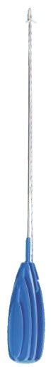
Ancla totalmente de sutura UHMWPE con orificio piloto reducido. Ideal para SLAP posterior y Bankart inferior. Resistencia promedio: 349.5N.
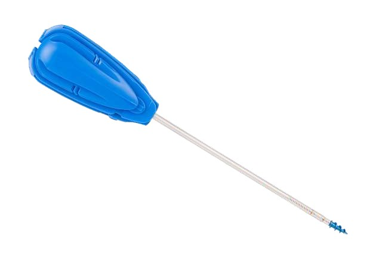
Ancla de titanio para reparación de manguito rotador y reemplissage. Disponible en 5.0mm y 6.5mm. Resistencia promedio: 563N.
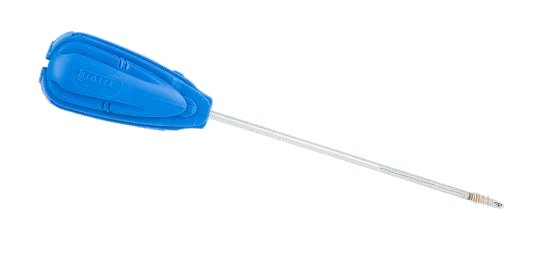
Ancla PEEK completamente roscada para fila primaria y medial. Disponible en 4.5mm y 5.5mm con doble y triple opción de sutura BioFiber®.
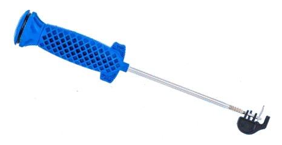
Ancla PEEK sin nudo para fila lateral en técnica de doble fila (tipo puente). Disponible en LRP y LRT, diámetros 4.75mm y 5.5mm.
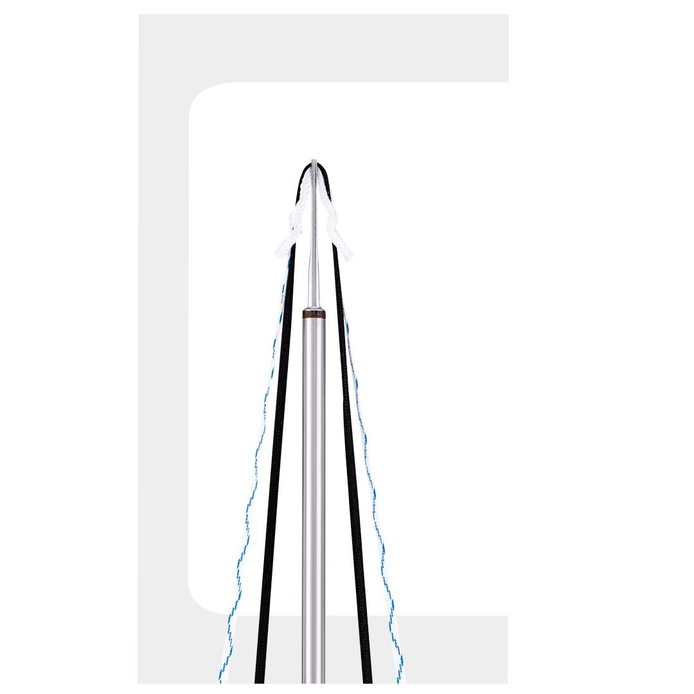
Ancla de sutura blanda UHMWPE autoperforante para manguito rotador y reemplissage. Doble y triple carga con sutura BioFiber® y BioFiber® Tape.
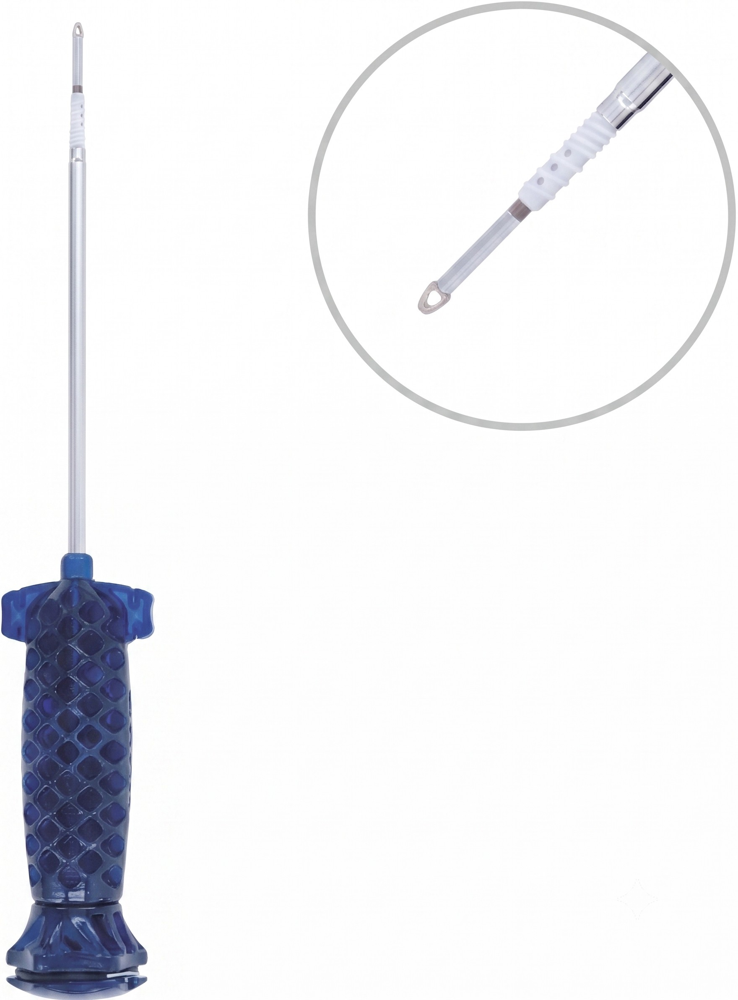
Ancla bioabsorbible (70% PLDLLA + 30% β-TCP) completamente roscada. Disponible en 4.5mm y 5.5mm con sutura BioFiber® y BioFiber® Tape.
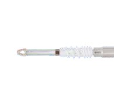
Ancla bioabsorbible sin nudo con punta PEEK para técnica Cross Bridge. Para fijación de fila lateral en doble fila sin nudos. 4.75mm y 5.5mm.

Tornillo de tenodesis sin nudo para bíceps proximal totalmente artroscópico. Punta PEEK guía el tendón al alveólo sin externalizarlo. Fuerza: 470.8N.

Sistema de doble botón sin nudo con sutura BioFiber® Loop para reparaciones acromioclaviculares (AC). Técnica mínimamente invasiva.
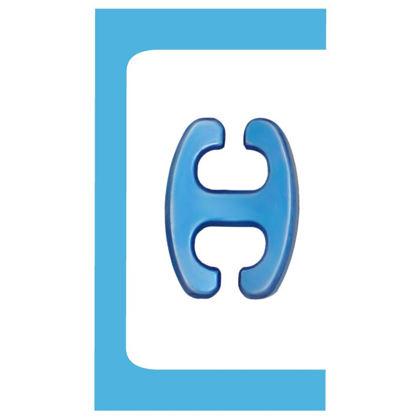
Botón de fijación para reconstrucción acromioclavicular con suturas BioFiber® Tape independientes. Completada a través de un túnel más pequeño.
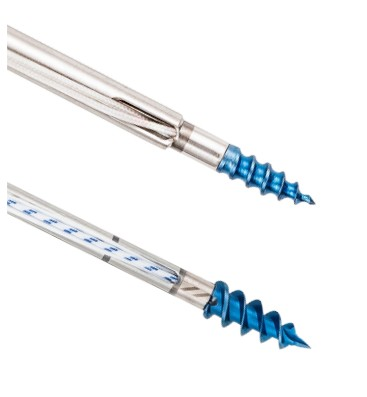
Ancla de titanio para reparación de ligamentos carpo-metacarpianos, tarso-metatarsianos y falanges. Disponible en 1.8mm y 2.0mm con sutura y aguja.
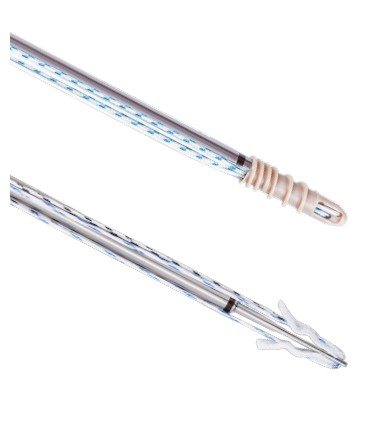
Ancla de PEEK para reparación de ligamentos carpo-metacarpianos, tarso-metatarsianos y falanges. Disponible en 1.8mm y 2.0mm. Ideal para matrices óseas blandas.
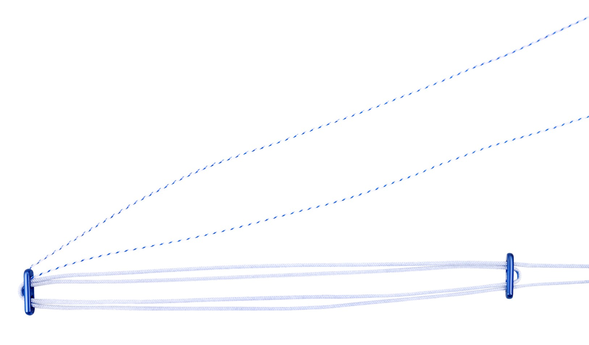
Sistema de dos botones de titanio con lazo BioFiber® ajustable para fijación de la luxación de la articulación radiocubital distal (DRUJ). Orificio de 2.7mm.
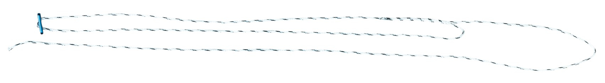
Sistema de un botón de titanio para tratamiento de artritis CMC e inestabilidad del pulgar. Orificio de 1.5mm para paso de metacarpiano radial a cubital.
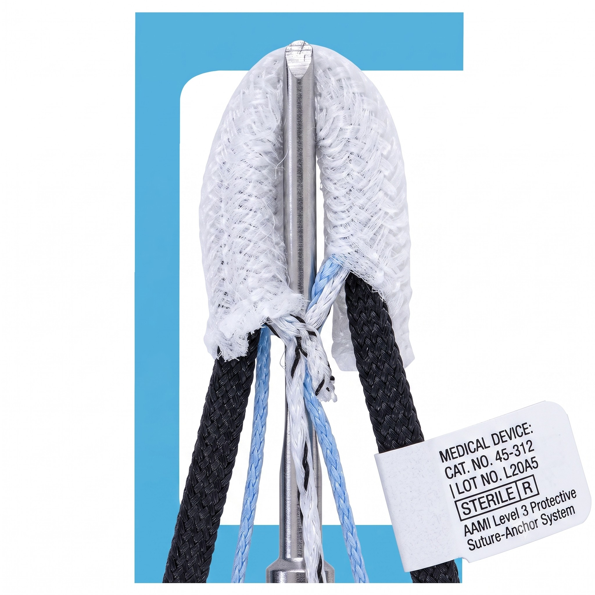
Ancla de sutura blanda UHMWPE para artritis CMC, reparación TFCC y ligamento SL. Disponible en 1.5mm y 1.8mm con aguja. Orificio piloto reducido.

Fibra quirúrgica estéril trenzada de UHMWPE no absorbible. Reacción inflamatoria mínima. Disponible en varios tamaños y colores, con y sin aguja.
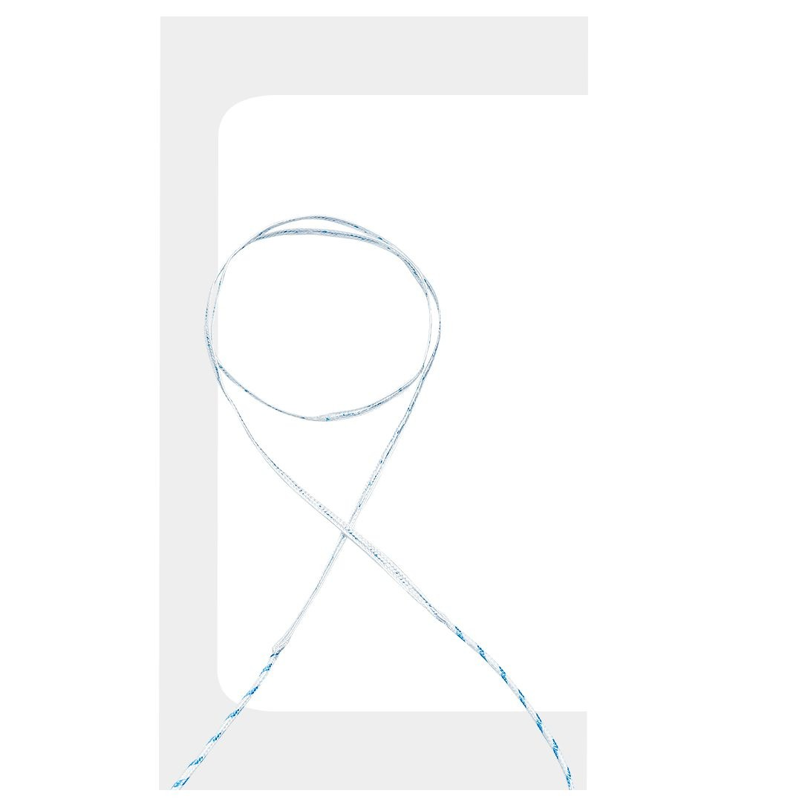
Cinta UHMWPE de ultra alta resistencia, 2mm de ancho. Ideal para manguito rotador doble fila sin nudos, reconstrucción AC y reparaciones de pie y tobillo.
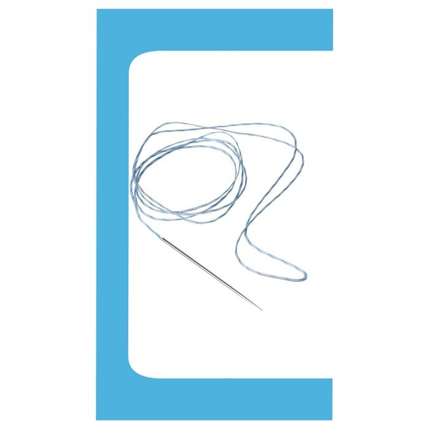
Bucle continuo de sutura BioFiber® con agujas rectas y curvas. Reduce el tiempo de preparación del injerto con técnica Whipstitch y mejora su resistencia.
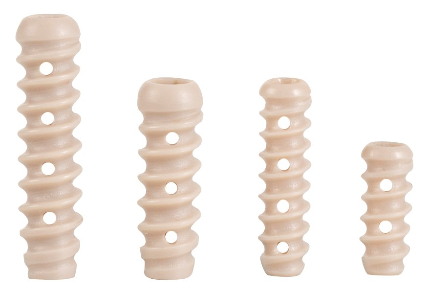
Tornillo de interferencia canulado PEEK para transferencia de tendones y reconstrucción ligamentaria en pie y tobillo. Disponible en diámetros 4.0mm a 8.0mm.
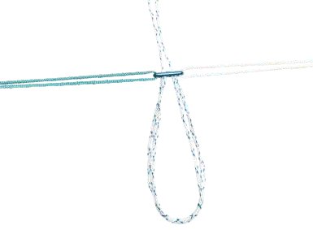
Botón de fijación con lazo ajustable para reconstrucción de LCA/LCP. Las suturas ajustables permiten calibrar el lazo al tamaño óptimo. Resistencia: 1300 N.
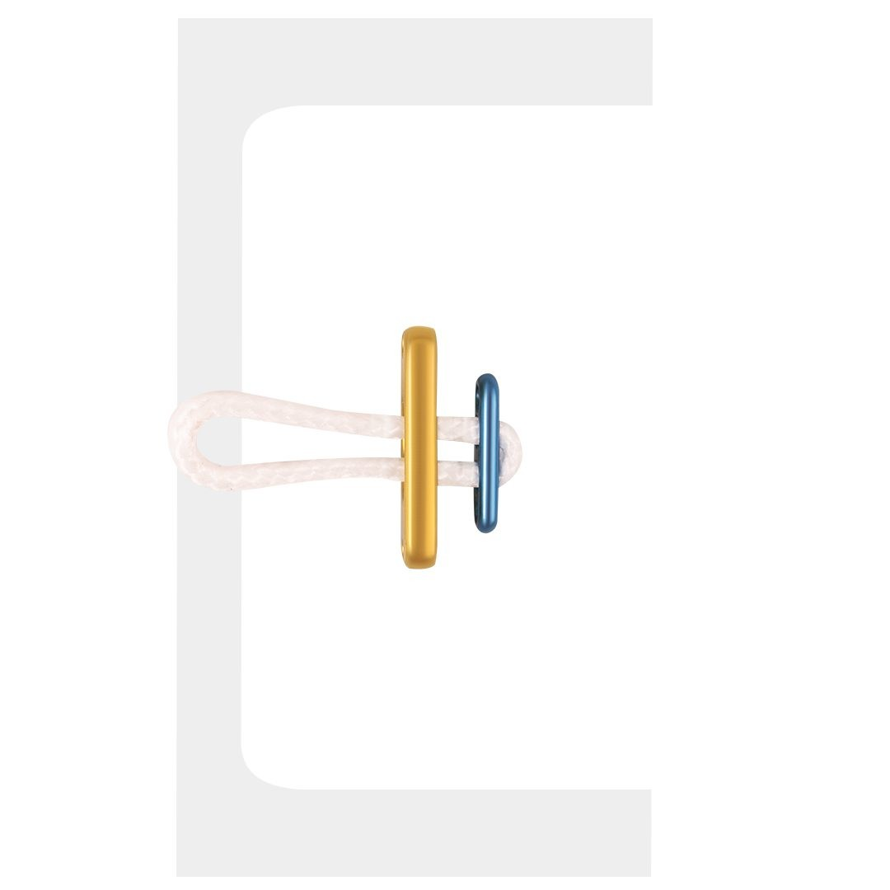
Botón de fijación de superficie ampliada para LCA. Solución eficaz en explosiones corticales y complicaciones de cirugías de revisión. 18×5.5×2.5mm.

Tornillo bioabsorbible 75% PLDLLA + 25% BCP para reconstrucción de LCA. Resorción regulada con osteointegración y crecimiento óseo. Diámetros 7–12mm.
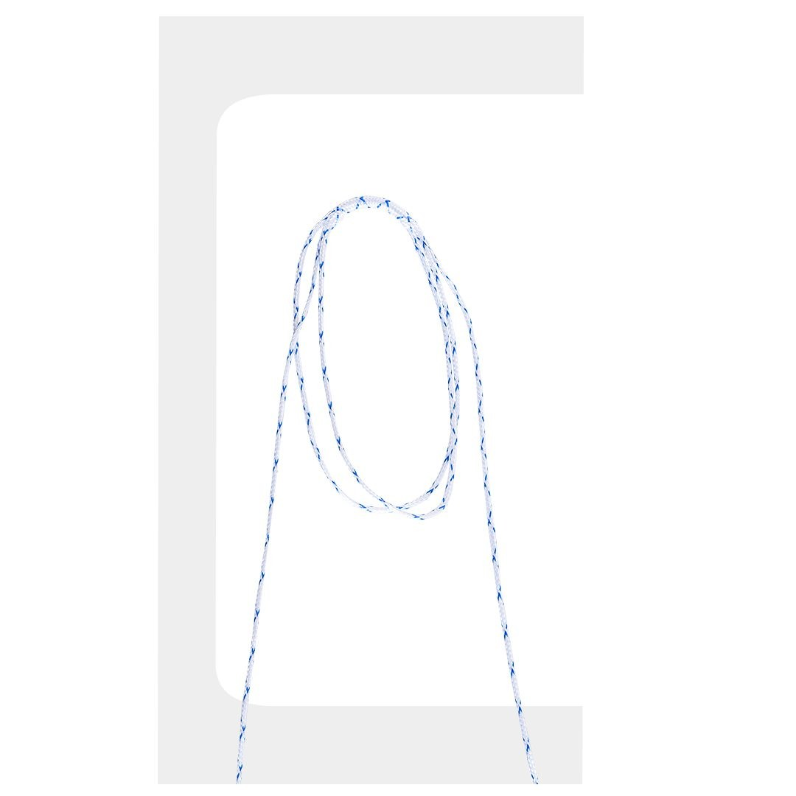
Lazo de fibra ajustable para fijación cortical tibial con placa SMARTFIX. Mecanismo de bloqueo sin nudos para fijación rígida del injerto en all-inside LCA/LCP. Lazo: 90mm.
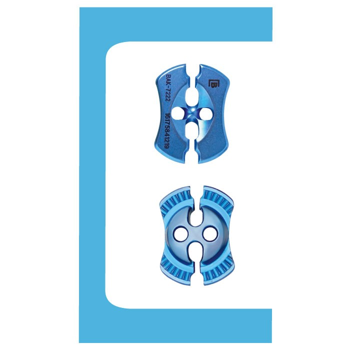
Placa base tibial para fijación all-inside de LCA. Ranuras de tensión y diseño dentado para bloqueo en corteza tibial. Tallas Mediana (túneles 7–8mm) y Grande (9–11mm).
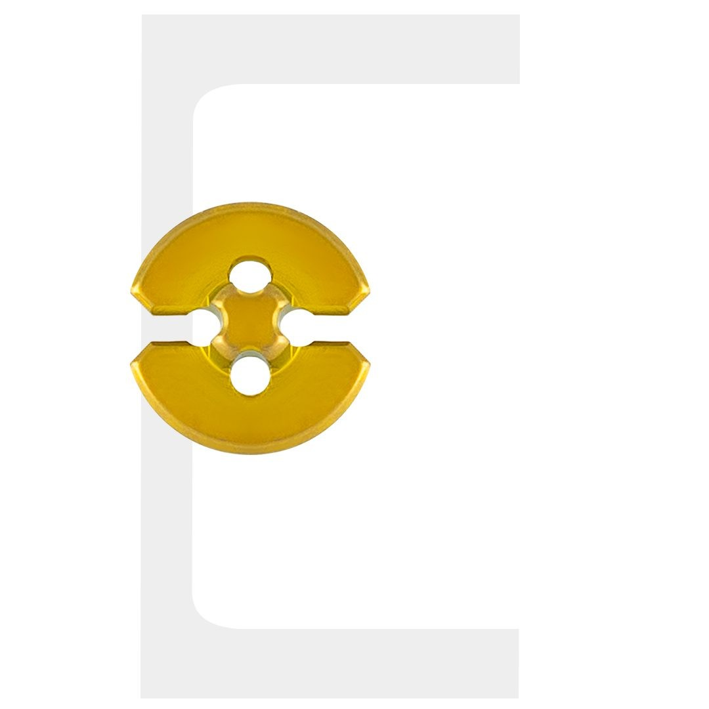
Botón de fijación de perfil bajo para reconstrucción all-inside del LCA. Botón cónico adaptable al lado tibial. Compatible con BioFiber® Tape 1.1mm. Dimensión: 10×3.3mm.
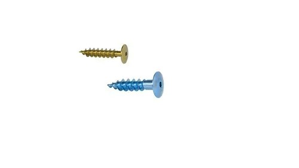
Tornillo de titanio para atrapar suturas y nudos de forma atraumática bajo un cabezal de perfil bajo, eliminando irritación de tejidos blandos. Ø6.5mm × 30mm.
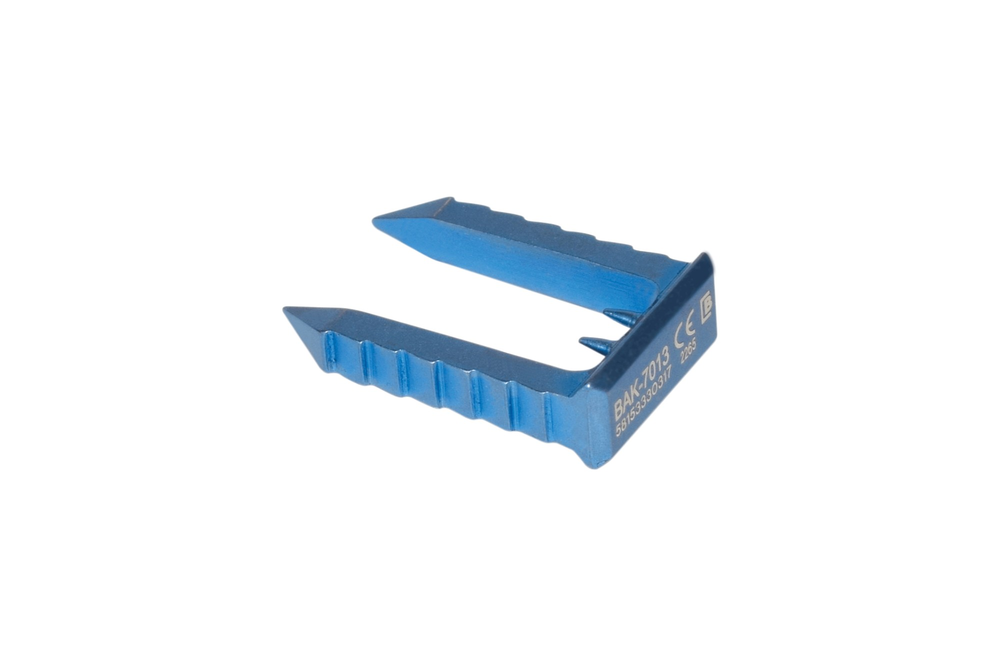
Grapa de titanio con lanzas en punta para unir tejido blando al hueso en reconstrucción de LCA. Base ancha de perfil bajo y lanzas que estimulan el flujo vascular. 2 tamaños.
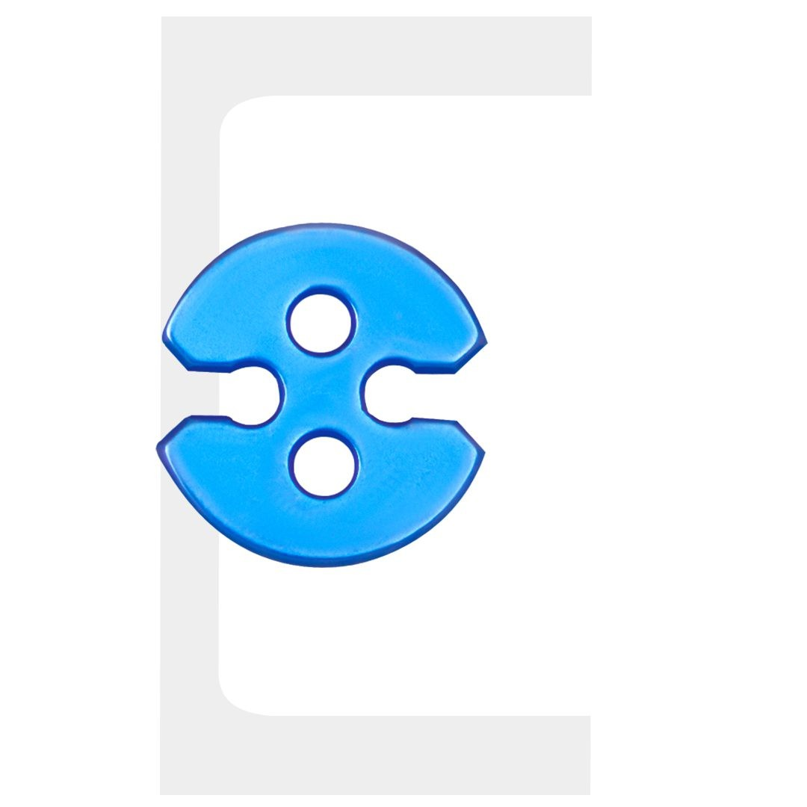
Botón de fijación de perfil bajo para reparación de raíz de menisco. Botón plano adaptable al lado tibial con orificios abiertos y cerrados para deslizamiento de suturas. 10×1.3mm.

Kit de reparación de menisco de adentro hacia afuera con agujas rectas pre-cargadas con sutura UHMWPE. Vainas guía curvas y rectas para acceso a todas las zonas del menisco.
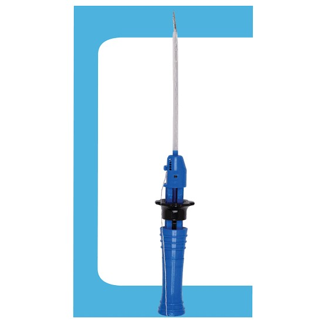
Sistema de reparación de menisco all-inside 360°. Sin nudos intra-articulares. Suturas en punto colchonero horizontal o vertical en superficies femoral o tibial. 4 variantes de curvatura.
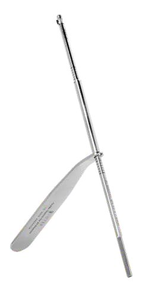
Escariadores all-inside para reconstrucción de LCA/LCP con hoja autodesplegable. Perforación inversa que preserva hueso corticoesponjoso. Diámetros 6–12mm en incrementos de 0.5mm.
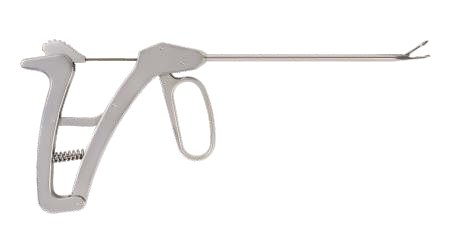
Mini pasador de sutura para reparación de menisco en rodilla. Uso con una sola mano para paso de suturas en áreas apretadas. Compatible con BioFiber® USP 2–2-0 y mini cinta 1.1mm.
Nuestro equipo responde en menos de 24 horas. Cuéntanos qué necesitas y te orientamos sobre el producto más adecuado para cada procedimiento.